这一章在做什么
这一章从蜡烛出发，沿着人造光一路走到激光和核聚变。光源一代代换，每换一代就在别处留下一件事：睡眠习惯、捕鲸业、报刊、贫民窟改革、后现代建筑、大卖场。
中间最长的两节借灯泡和闪光灯讲同一个论点：发明出自一张人和想法的网，不出自某个天才的灵光一现。读每一节时问两件事：光源换成了什么，它在哪个不相干的地方留下了后果。
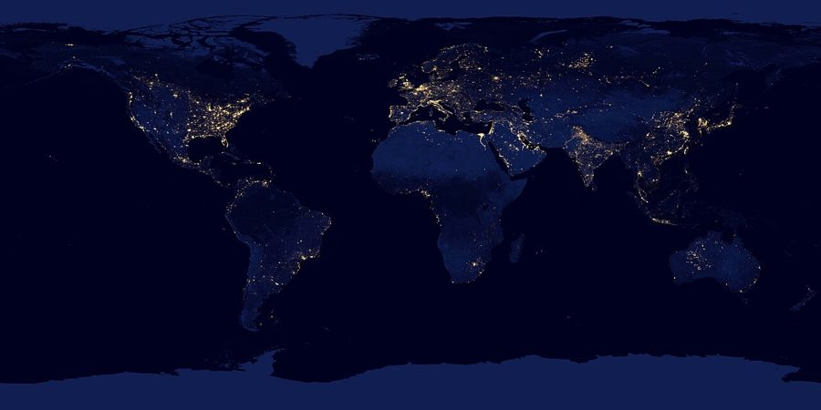
卫星拼出的地球夜景，2012 年。这一章的开头就是这个画面：从太空看，人造光是地表最显眼的变化。
NASA Earth Observatory，公有领域，维基共享资源 因果链：这一章的蜂鸟效应
这一章不是一条单链，是一根主干加一串侧枝：主干是光源的更替，侧枝是每种光在别处引出的事。拆成两张图。
前四节：光源一代换一代（左列），每一代在别处留下的事（右边）
牛油蜡烛 §1
鲸脑油蜡烛 §2
煤油灯、煤气灯 §2–3
白炽灯 + 供电网 §4
被下一代取代
又暗又贵，冬夜又长 §1 · 一夜分成两段睡
捕鲸业暴涨 §2 · 捕鲸港口兴起
抹香鲸差点被杀绝 §2 · 一百多年杀了约三十万头
↖ 石油一来，鲸油没人要了
夜里读得了书：报刊爆发 §3 · 油灯也真的会爆炸
一觉八小时成了规范 §1 · 半夜醒来被当成失眠
跨学科研发实验室 §4 · 股权激励、亚洲供应链
贝尔实验室、施乐 PARC §4 · 20 世纪的创新方式
本站示意图。蓝色一列是照明本身的更替，灰框是它在别处引出的事。虚线那一跳方向相反：新光源让上一代光源的受害者活了下来。§1 的睡眠变化，书里归因于 19 世纪整体变亮的夜晚，这里挂在煤油灯、煤气灯那一行。
后四节：每种新的光从哪来（左），引出什么（右）
镁粉加氧化剂 照相在暗处拍不了
闪光粉 §5
贫民窟的室内照片 外人第一次看见
1901 年租屋法 进步时代的改革
液化空气的废料 制氧制氮剩下的氖
霓虹灯 §6
拉斯维加斯的招牌 水坝供电，招牌成林
后现代建筑 向招牌学习
科幻里的热射线 想法走在科学前面
激光 §7
条形码扫描 管库存变得便宜
大卖场挤垮小店 店越大越划算
光纤通信（第 1 章）
192 路激光 §8
核聚变点火 地上的「小太阳」
清洁能源？ 还没有实现
本站示意图。闪光粉和霓虹灯都不是为了「照亮房间」发明的，它们是主干旁边的两根枝。最右一列全都落在照明之外：法律、建筑理论、零售业、能源。 最出人意料的一跳在 §5：德国人为了在暗处拍照配出的一种粉末，十几年后变成纽约的一部住房法。§6 的那一跳同样远：工业制氧剩下的废气，成了一本建筑理论书的前提。
作者在这两节末尾都停下来为这条链辩护，那几段是全章的论证重心，别当成闲笔跳过。
分节地图
原书这一章分 8 节，节与节之间是一条短横线，每节开头几个词是小型大写字母。读完一节回来打个勾。
Imagine some alien civilization viewing …约 900 词 开场定调：人造光改了地球的样子，也改了睡眠。抓住「适应必有代价」这层意思。 IT’S A STORY THAT BEGINS …约 600 词 链条第一环：更好的光来自鲸的头。看需求怎样养出一个产业，又差点灭掉一个物种。 FOSSIL FUELS WOULD BECOME CENTRAL …约 600 词 拿光当尺子量进步。记住那三个数字，§4 结尾还会拿它们当论据。 THE STRANGE THING about the …约 2100 词 全章论点所在：灯泡不是一个人一个念头的产物。分清作者夸爱迪生什么、不夸什么。 BURIED DEEP NEAR THE CENTER …约 2400 词 最远的一跳：照相用的闪光引出住房改革。抓住结尾对技术决定论的反驳。 IN THE FALL OF 1968 …约 1500 词 同一论点换到艺术：废气变招牌，招牌变建筑理论。看作者怎样为这条链辩护。 IDEAS TRICKLE OUT OF SCIENCE …约 1100 词 方向反过来：想法先出现在小说里。再看激光最先改变的为什么是零售业。 WHILE THE EARLY SCI-FI FANS …约 900 词 收尾：光回到能源。作者不下结论，拿捕鲸作比，留意他留了多少余地。
背景：作者默认你知道的事
这一章人名最密的是 §4 到 §6。下面按出现的顺序，只补「不知道就读不出那句话分量」的东西。
§1 希克苏鲁伯、阿基米德和头顶的灯泡Chicxulub（希克苏鲁伯）是墨西哥尤卡坦半岛的一个陨石坑。一般认为约 6600 万年前一颗小行星撞在这里，恐龙因此灭绝（书里的 6500 万年是旧数字）。作者拿它作比，是说人造光是那之后地表最显眼的变化。
eureka 是阿基米德在浴盆里想通浮力时喊的「我找到了」；英美漫画里人物有了主意，头顶会亮起一只灯泡，这就是 lightbulb moment 。
§1 这一章的英制单位
书里的说法 换算 在说什么 seventy-eight pounds 约 35 公斤 §1 哈佛校长两天做的蜡烛 five hundred gallons 约 1900 升 §2 一头抹香鲸头里的鲸脑油 two thousand miles 约 3200 公里 §4 为找竹子划过的河 sixty-foot 约 18 米 §6 霓虹牛仔的高度 350 miles 约 560 公里 §8 旧金山到洛杉矶 eighty-foot 约 24 米 §8 抹香鲸的体长（书里的说法）
美元的年代购买力书里自己给了换算，不用再算。
§2 楠塔基特、「埃塞克斯」号和《白鲸》
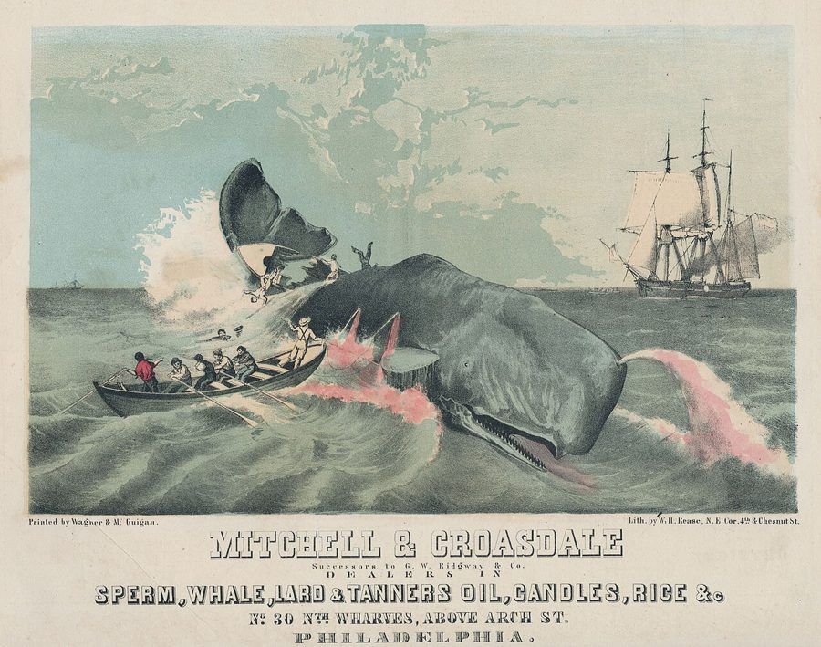
费城一家鲸油和蜡烛商的广告，1856 年。画的是捕抹香鲸：小艇靠上去投鱼叉。
Library Company of Philadelphia，公有领域，维基共享资源 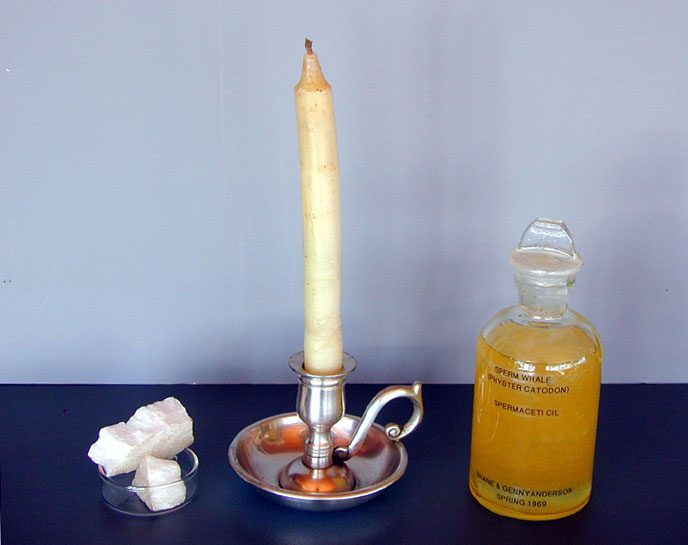
左起：鲸脑油凝成的蜡、鲸脑油蜡烛、一瓶抹香鲸油。
Genevieve Anderson，CC BY-SA 3.0，维基共享资源
楠塔基特（Nantucket）是马萨诸塞州外海的小岛，18 世纪到 19 世纪前期是美国捕鲸业的中心；埃德加敦（Edgartown）在旁边的玛莎葡萄园岛上。两处今天都是富人的避暑地，所以书里说那些街道 elegant 。
1820 年捕鲸船「埃塞克斯」号在太平洋被一头抹香鲸撞沉，梅尔维尔 1851 年的小说《白鲸》（Moby-Dick ）取材于此。
§3 诺德豪斯和「流明小时」威廉·诺德豪斯（William Nordhaus）是耶鲁大学的经济学家（书里称他 historian），2018 年获诺贝尔经济学奖。流明（lumen）是光通量的单位：一支蜡烛大约 13 流明，一只老式 60 瓦白炽灯约 800 流明。
所以「一千流明小时」差不多是这样一只灯泡亮一个多小时，或者一支蜡烛点三天。
干一小时活，能换来多久的人造光（书里引的数字）
1800 年 · 牛油蜡烛 10 分钟
1880 年 · 煤油灯 3 小时
今天 300 天
6 分钟 1 小时 10 小时 100 小时 1000 小时 1 万小时
横轴是对数刻度，每一格十倍。按普通刻度画，前两根条短得看不见。
本站示意图。诺德豪斯的办法是不比工资数字，只比「一小时劳动换多少光」。从 10 分钟到 300 天是四万多倍，§4 结尾作者拿这组数字说明：创新从哪来，是个值得较真的问题。 §4 爱迪生、门洛帕克和他的班底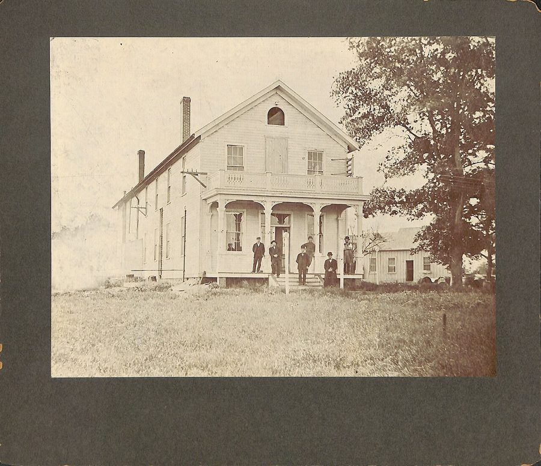
爱迪生在新泽西州门洛帕克的实验室主楼。
作者不详，公有领域，维基共享资源 门洛帕克（Menlo Park）在新泽西州，离纽约不远，不是硅谷那个同名小城。爱迪生 1876 年在这里建了实验室，报纸叫他 the Wizard of Menlo Park 。
书里一再拿他和乔布斯比：iPod（2001）也不是第一个 MP3 播放器；revolutionary and magical 是苹果发布会的招牌用语。贝尔实验室出了晶体管，施乐帕克研究中心（Xerox PARC）出了图形界面和以太网。
汉弗里·戴维 Humphry Davy 英国化学家。书里说他 1802 年就让铂丝通电发了光，比爱迪生早近八十年。
约瑟夫·斯旺 Joseph Swan 英国发明家。和爱迪生差不多同时做出能用的炭丝灯泡，先一步装进了住宅和剧院。
弗朗西斯·厄普顿 Francis Upton 团队里受过正规训练的物理学家，也是不要工资要股票的那一位。
查尔斯·巴彻勒 Charles Batchelor 英国机械师，爱迪生的左右手，负责把一种种灯丝材料做出来试。
约翰·克鲁西 John Kruesi 瑞士机械师。书里只提了名字，用来说明这支队伍的来历有多杂。
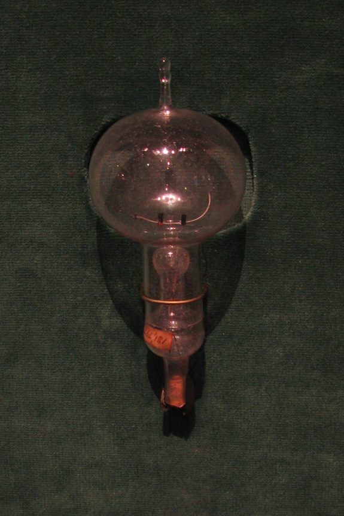
门洛帕克出品的早期炭丝灯泡。顶上的小尖是抽成真空后烧熔封口留下的。
Terren，CC BY 2.0，维基共享资源 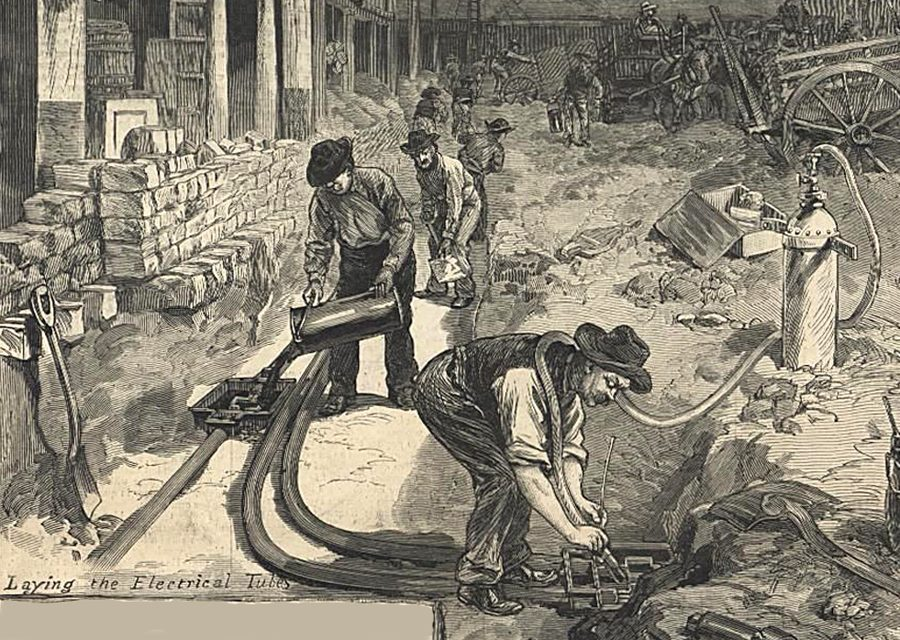
1882 年《哈珀周刊》的插图（局部）：工人在纽约街头为爱迪生的供电系统埋设电缆管。§4 后半段说的「系统」，一大半埋在地下。
W. P. Snyder，公有领域，维基共享资源 §5 两个 ark，和皮亚齐·史密斯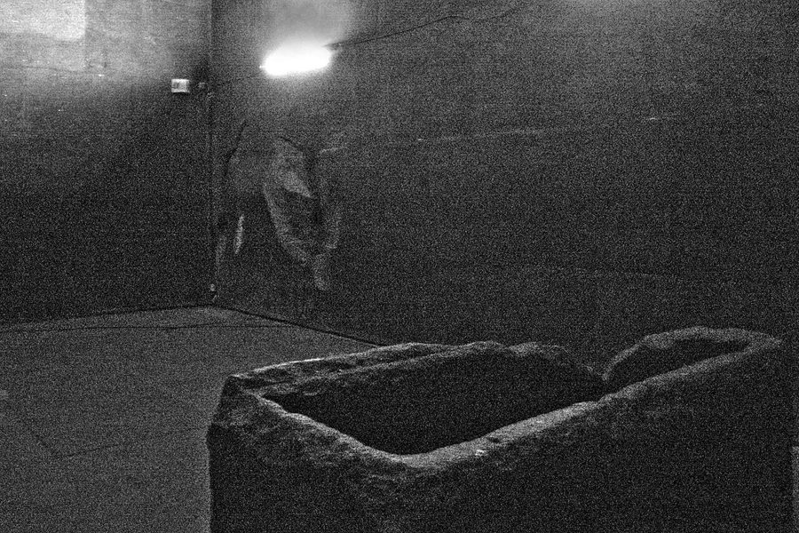
胡夫金字塔的「国王墓室」和那只缺了一角的花岗岩石箱，2008 年。今天有电灯，照出来仍然这么暗。
Andrew Currie，CC BY 2.0，维基共享资源 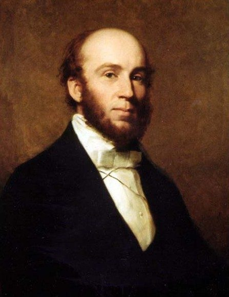
查尔斯·皮亚齐·史密斯，苏格兰皇家天文学家。
John Faed，公有领域，维基共享资源 英语里两样东西都叫 ark：Ark of the Covenant 是约柜，传说里装着刻有十诫的石板；Noah’s Ark 是诺亚方舟。书里那句 a different Old Testament ark 就是从前一个换到后一个。
史密斯（Charles Piazzi Smyth）1846 年起任苏格兰皇家天文学家。书里说他 1861 年秋到吉萨；多数资料记的是 1864 年底到 1865 年。
§5 里斯、廉租公寓和「扒粪者」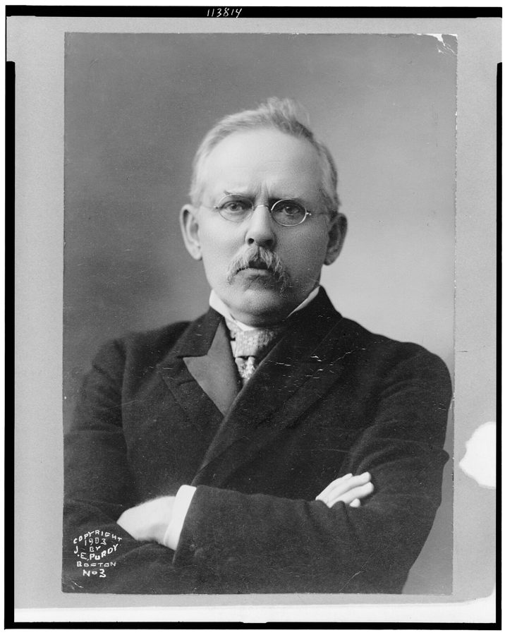
雅各布·里斯，1903 年。
James E. Purdy 摄，美国国会图书馆，公有领域，维基共享资源 雅各布·里斯（Jacob Riis，1849–1914）生于丹麦，1870 年移民美国，在纽约做警务记者。tenement 是下东区挤满移民的廉租公寓楼，很多房间没有窗。muckraker（扒粪者）指揭黑记者，这个叫法出自西奥多·罗斯福 1906 年的一次演讲。
书里有两处年代对不上：1887 年里斯是 38 岁，不是 28 岁；罗斯福主持纽约警务是 1895 到 1897 年，在《另一半人怎样生活》（1890）出版之后。
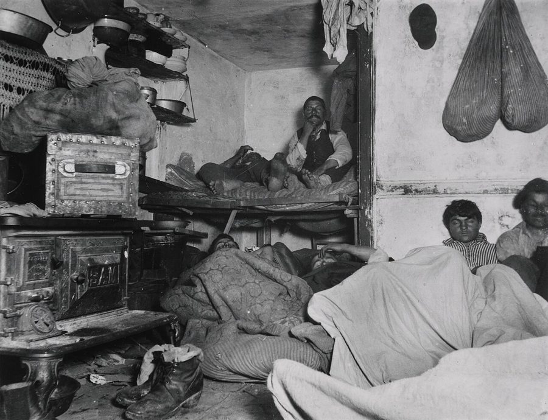
里斯用闪光拍的照片，纽约贝亚德街一处廉租公寓里的寄宿者，约 1889 年。几个人被闪光晃得眯着眼。没有闪光，这间屋子在照片上是一片黑。
Jacob Riis，公有领域，维基共享资源 §6 现代主义、后现代和拉斯维加斯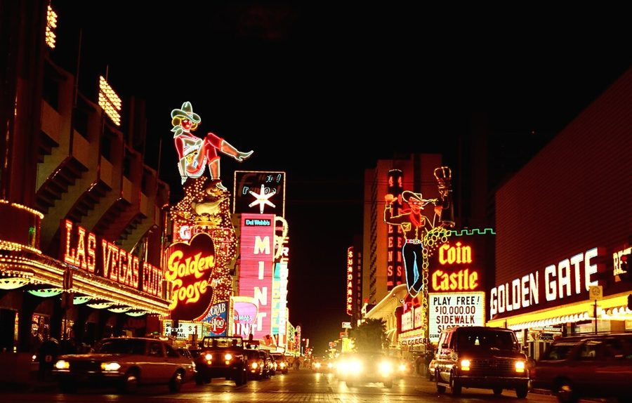
拉斯维加斯弗里蒙特街，1980 年代。右边的牛仔叫 Vegas Vic，是 YESCO 做的。看不见楼，只看得见招牌。
Larry D. Moore，CC BY 4.0，维基共享资源 现代主义建筑讲究几何、克制、不要装饰，书里举的西格拉姆大厦（Seagram Building，纽约，1958）和巴西新首都巴西利亚都是样板。文丘里夫妇 1972 年出版《向拉斯维加斯学习》，替招牌、典故和俗气辩护，成了后现代建筑的奠基之作。
内华达州 1931 年赌博合法化；胡佛水坝（Hoover Dam）1936 年建成，离拉斯维加斯约 50 公里。
乔治·克洛德 Georges Claude 法国工程师，靠液化空气起家。1910 年在巴黎大皇宫展出霓虹灯。
汤姆·扬 Tom Young 犹他州的招牌商，YESCO 的创办人，把霓虹带进了拉斯维加斯。
文丘里和斯科特·布朗 Robert Venturi, Denise Scott Brown 建筑师夫妇。书里把后者简称 Brown。
汤姆·沃尔夫 Tom Wolfe 美国记者、作家，「新新闻主义」的代表人物。书里引了他写拉斯维加斯的一段。
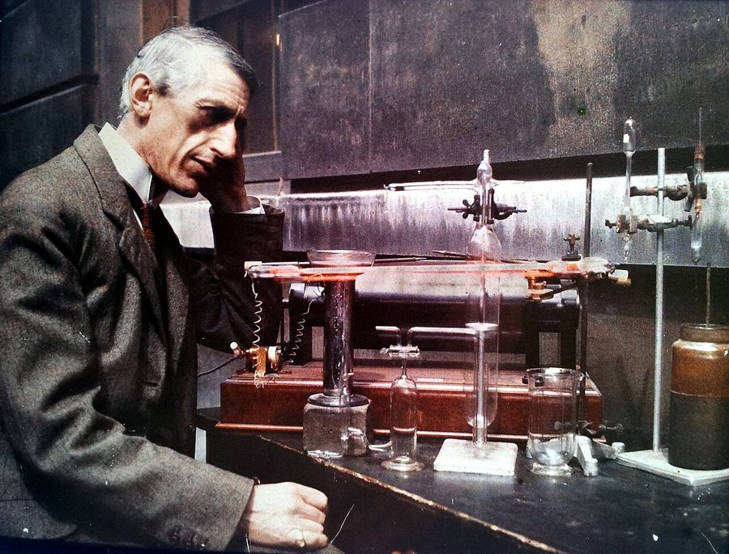
伦敦大学学院的化学教授 J. Norman Collie 和一根点亮的氖放电管，约 1911 到 1913 年。台上那根横着的橙红色细管就是。
UCL Chemistry Collections，CC BY 3.0，维基共享资源 §7 第一次扫码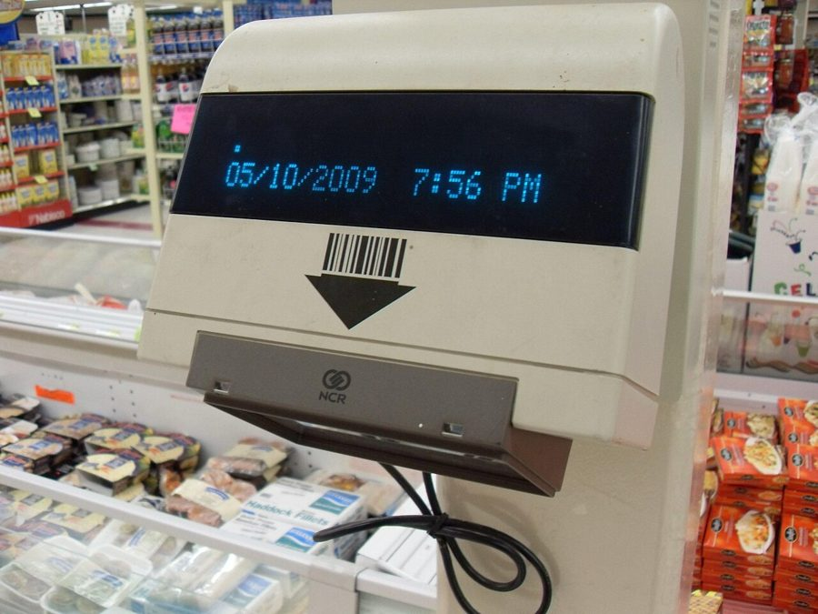
美国一家超市里的查价扫描器，2009 年。把商品的条形码放到下面的窗口前，屏幕就显示价格。
Luke，公有领域，维基共享资源 1974 年 6 月 26 日，俄亥俄州特洛伊市的一家 Marsh 超市里，一包箭牌（Wrigley’s）口香糖成为第一件扫码结账的商品。书里的 Target、Best Buy 是美国的大型连锁卖场。
Flash Gordon 是 1934 年开始连载的太空冒险漫画，主角用的就是射线枪；书里拿它代表「科幻里的激光武器」。
§8 国家点火装置，和后来的事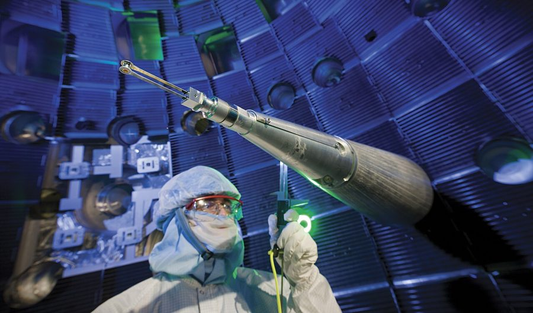
NIF 靶室内部，2008 年。那根金属臂把靶子送到直径 10 米的球形舱正中央，舱壁上的开口是激光进来的地方。
Lawrence Livermore National Security，CC BY-SA 3.0，维基共享资源 NIF 属于劳伦斯利弗莫尔国家实验室，在旧金山湾区东边，2009 年建成。书里说的 2013 年「净能量为正」，指聚变放出的能量超过了燃料实际吸收的能量，仍远小于激光打出去的能量。
2022 年 12 月，NIF 第一次做到聚变产出（约 3.15 兆焦）超过激光输入（2.05 兆焦）。整套设备的耗电仍比这大得多，离发电还远。
这一章的科学，先用中文过一遍
白炽灯：灯丝、真空和电
电流流过有电阻的导体会发热，像水流过窄管会磨得发烫。灯丝就是一段电阻很大的细丝，通电后烧到上千度，热到发光，这叫白炽（incandescence）。
麻烦在于：这么热的炭丝遇到氧气会立刻烧掉。办法是把玻璃泡里的空气抽走，没有氧气，灯丝只发光、不燃烧。
所以一只灯泡至少要三样东西：会发光的丝、不让它烧掉的办法、稳定的电源。白炽灯的大部分电能变成了热，只有一小部分变成光。
玻璃泡 把真空封在里面
灯丝 电阻大，通电就烧到上千度，热到发光
真空 没有氧气，灯丝只发光，不会烧掉
两根引线 电流从一头进，穿过灯丝，从另一头出
泡里要是有空气：炭丝在高温下和氧气反应，几分钟就烧断。
本站示意图。§4 里爱迪生团队试遍各种材料，试的就是橙色这一段：什么东西烧到白热还能撑得久。 霓虹灯：让气体自己发光
霓虹灯里没有灯丝。玻璃管里封着一点稀薄的气体，两头加上高电压，管里的电子被电压加速，撞上气体原子。
原子被撞之后，有的被撞掉电子，这叫电离（ionization）；有的只是被「激发」到高能状态，随即落回来，把多出的能量以光的形式放掉。
每种原子放出的光颜色是固定的：氖是橙红，氩偏淡紫蓝，汞蒸气偏蓝。所以换气体就换颜色。英文 neon 就是「氖」这个元素的名字。
气体放电：电子撞原子，原子发光
高压电源
电极 电极
蓝点：电子，被电压加速 橙球：气体原子，被撞后放出光
氖：橙红
氩：淡紫蓝
汞蒸气：蓝
本站示意图。管子可以弯成任何形状，所以霓虹灯能直接「写字」，这是 §6 里招牌商看中它的原因。汞是金属，汞蒸气不算稀有气体，书里那句把它一并说了进去。 激光：把光排成整齐的一队
灯泡发出的光是一锅粥：各种波长混在一起，朝四面八方散开。激光（laser）里的光波长相同、方向相同、波峰对着波峰，所以能保持成极细的一束，还能聚成极小的亮点。
书里引的那个比方很准：激光之于普通光，好比电台的广播信号之于沙沙的杂音，一个是单一频率，一个是所有频率乱成一片。
读条形码正好用得上这一点：一个很小的亮点扫过去，深色条吸光，空白处反光，探测器读到一串明暗，就得到条的宽窄。早先的方案用大灯泡照，又热又不准。
普通光：波长、方向、步调各不相同
各种颜色（波长）混在一起 朝各个方向散开，走远就暗 聚不成很小的亮点
激光：同一波长，同一方向，波峰对波峰
又细又直的一束 能聚成极小的亮点
用它读条形码
橙线：激光点从左扫到右 色条吸光，空白处把光反射回去
绿线：探测器收到的反光强弱，宽窄译成数字
本站示意图。激光最先大规模派上用场的地方不是武器，是收银台。它的长处不在「强」，在「齐」。 激光聚变：把燃料压成一颗小太阳
核聚变（nuclear fusion）是把很轻的原子核挤到一起，合成一个重一点的核，同时放出巨大的能量，太阳就靠它发光。原子核都带正电，互相排斥，要让它们撞到一起，得有极高的温度和密度。
太阳靠自身的引力压出这种条件。NIF 用的办法叫惯性约束（inertial confinement）：192 路激光同时从四面八方打过来，把一粒胡椒大小、装着氢的同位素（氘和氚）的燃料丸瞬间压缩、加热，让它在散开之前完成聚变。
实际的装置里，激光先打在包着燃料丸的小金属筒内壁上，产生的 X 射线再去挤压燃料丸，书里略去了这一层。焦耳（joule）是能量单位，瓦（watt）是每秒多少焦耳，所以脉冲越短，同样的能量对应的功率越吓人。
惯性约束聚变：三步，全程不到百万分之一秒
① 多路激光同时打向燃料丸
② 燃料丸被压缩，升到上亿度
③ 氢聚变成氦，放出能量
本站示意图，只画了 8 路。难点在第 ② 步：各个方向压得稍有不匀，燃料丸就会被挤歪而不是挤紧。§8 里说的 almost perfect symmetry 指的就是这个。 名词对照
英文 中文 一句话 tallow 动物油脂（牛羊油） 熬出来的硬脂肪，做便宜蜡烛，烟大味臭。 spermaceti 鲸脑油，鲸蜡 抹香鲸头部空腔里的蜡状物，做出的蜡烛亮而无烟。 kerosene 煤油 从石油里炼出的灯油，19 世纪后半叶的主要照明燃料。 lumen-hour 流明小时 光的「量」：多亮乘以亮多久。和千瓦时是一个思路。 incandescent 白炽的 靠烧热发光。白炽灯是 incandescent lamp。 filament 灯丝 灯泡里通电发光的那根细丝。 electrical resistance 电阻 导体对电流的阻碍，电阻越大发热越多。 daguerreotype 达盖尔银版照相 1839 年公布的第一种实用照相法，影像留在镀银铜板上。 wet-plate, collodion 湿版，火棉胶 1850 年代起的照相法：玻璃板涂上药膜，必须趁湿拍完冲完。 halftone 半色调（网点）印刷 把照片拆成大小不一的小点，才能和文字一起印在报纸书页上。 magic lantern 幻灯 早期的幻灯机，把玻璃片上的画投到墙上。 rare gas 稀有气体 氦、氖、氩、氪、氙这一族。书里后面换了个说法 noble gas，是同一个意思。 ionization 电离 原子被撞掉电子，变成带电的离子。 Universal Product Code 通用商品码（UPC） 北美超市用的那种条形码，一串粗细不同的竖条代表一串数字。 nuclear fusion 核聚变 轻原子核合成较重的核并放能。和核电站用的裂变（fission）方向相反。
词与短语
词条按在书里出现的顺序排，按节分组。斜体小字是它所在的那句话里的几个词，方便你在书里找到。
§1 Imagine some alien civilization viewing …
creep
… the creep of glaciers spreading and …
极缓慢的移动
这里是名词。和前后的 flux（流动）、drift（漂移）并列，三个词都在说「慢得看不出来」。
afterthought
… civilization would be an afterthought: opposable …
不值一提的附带小事
字面是「事后才想起来的东西」。冒号后面列的拇指、文字、印刷术，都被它一笔带过。
pale beside
… these would pale beside the brilliance …
和……相比黯然失色
pale 作动词。作者在玩光的字眼：brilliance 既是光辉也是才智；Homo lumens 是仿 Homo sapiens 造的词，「发光的人」。
be bound up in
… is so bound up in the …
和……紧紧连在一起
引言里出现过。so … that 句型：连得太紧，以至于灯泡成了「好主意」的比喻。
appropriately named
… during the (appropriately named) Dark Ages …
名字起得真贴切的
括号里的小玩笑。Dark Ages（欧洲中世纪前期）的 dark 本是「蒙昧」，作者说它连字面意思也对：真的没灯。
make do with
… Most people made do with tallow …
凑合着用
没有更好的，只能将就。不是「用……做」。
nursery rhymes
… As our nursery rhymes remind us …
童谣
指英语童谣《Rub-a-dub-dub》，里面三个人是屠夫、面包师和 candlestick-maker（做烛台的）。美国读者从小会背。
tax rolls
… Parisian tax rolls from 1292 listed …
纳税人名册
roll 是名单，本义是卷起来的羊皮纸。roll call 是点名，payroll 是工资单。
chandler
… seventy-two “chandlers,” as they were called …
蜡烛匠，蜡烛商
和 chandelier（枝形吊灯）、candle 同源。§2 那个行会名字里也有它。英语姓氏 Chandler 就是这么来的。
burn through
… he managed to burn through two …
烧光，用光
这里是字面义。平时多用来说花钱：burn through one’s savings 。
pitch-black
… sun goes down, it’s pitch-black: there …
漆黑
pitch 在这里是沥青，不是音高或球场。也说 pitch-dark 。
ubiquitous
… the ages before ubiquitous night lighting …
无处不在的
这一章出现四五次。读 /juːˈbɪkwɪtəs/。
draw upon
… study that drew upon hundreds of …
取材于，利用
draw 的「汲取」义，和画画无关。
relieve oneself
… to snack, relieve themselves, have sex …
上厕所
委婉语，字面是「让自己轻松一下」。
plague
… insomnia that plagues millions of people …
长期困扰
名词是瘟疫，作动词是「像瘟疫一样缠着」。
assert oneself
… sleep rhythms asserting themselves over the …
重新显出力量，压过
主语是身体的节律。这句是 not X, but rather Y 结构，中间还插了 technically speaking，主干是：失眠不是病，是老节律在冒头。
prescriptions
… the prescriptions of nineteenth-century convention …
规定，定下的规矩
不是药方。来自 prescribe 的「规定」义。说的是「一觉睡八小时」这条人为的规矩。
macabre
… source that seems macabre to us …
阴森可怖的
法语来的词，读 /məˈkɑːbrə/。这一句是通向 §2 的钩子。
§2 IT’S A STORY THAT BEGINS …
legend has it
… Legend has it that sometime around …
相传，据说
固定说法，it 没有实际所指。同类：rumor has it 。作者用它先打个招呼：这故事未必可靠。
nor’easter
… a powerful nor’easter off the coast …
东北风暴
northeaster 的水手念法。美国东北沿海特有的强风暴，风从东北方向吹来。
wash ashore
… think it simply washed ashore in …
被冲上岸
主动形式，被动意思。破折号后面这半句是作者补的一刀：也许根本没人去捕。
offensive
… tallow candles, without the offensive smoke …
难闻的，讨人厌的
不是「进攻性的」。an offensive smell 是恶臭。
afford
… the new candles “afford a clear …
提供，给出
旧式用法，不是「买得起」。这是富兰克林 1751 年的信，名词首字母大写也是 18 世纪的写法。
snuffing
… need little or no Snuffing …
剪烛芯
老式蜡烛的烛芯烧焦了要不断剪掉，否则冒烟变暗。snuff out 是掐灭。
the well-to-do
… expensive habit for the well-to-do …
有钱人
the + 形容词表示一类人。well-to-do 是「家境宽裕的」。
trust
… conventionally known as the “Spermaceti Trust,” …
托拉斯，垄断联盟
熟词生义。同行联手控制价格的组织；antitrust law 就是反垄断法。
keep in check
… to keep their prices in check …
压住，不让它涨
check 是「制约」，国际象棋的「将军」也是它。§6 的 unchecked 是反义。
build out
… building out the beautiful seaside towns …
把……建成规模
out 表示「铺开、建全」。主语是捕鲸业的暴涨。
some poor soul
… some poor soul had to crawl …
某个倒霉的人
soul 指人，poor 是可怜不是穷。这半句是作者的写法标志：把一个抽象的「成本」落到一个具体的人身上。
on the order of
… Somewhere on the order of three …
大约在……这个量级
order 是数量级（order of magnitude）。程序员熟悉的 O(n) 的 O 也是 order。
had we not
… killed off had we not found …
要不是我们……
省略 if 的倒装虚拟句，等于 if we had not found 。倒装部分在句子后半，容易漏看。
spare
… most extraordinary creatures was spared …
被放过，逃过一劫
动词，不是「备用的」。spare someone’s life 是饶命。
§3 FOSSIL FUELS WOULD BECOME CENTRAL …
revolve around
… first commercial use revolved around light …
以……为中心
字面是绕着转。
spark
… brightness helped spark an explosion in …
引发
本义是火花、点燃。这里的 explosion 是比喻（出版业爆发），下一句马上变成真的。
literal
… they also sparked literal explosions: thousands …
字面意义上的，真的
作者提醒你：这回不是比喻，油灯真的炸了。§5 里他还会两次用 literally 做同样的事。
steady march
… The steady march of artificial light …
稳步推进
march 是行军。the march of progress / technology 是固定搭配，§5 最后一句还会出现。
chart
… ingenious study that charted that path …
把……一步步描画出来
动词。本义是绘制海图。
gauge
… try to gauge the overall health …
衡量，估计
读 /ɡeɪdʒ/，拼写和读音对不上。§4 说电表时又用了一次。
not to mention
… phonograph, not to mention an iPod …
更不用说
递进。wax phonograph 是蜡筒留声机，1850 年连它都还没有。
factor
… historians needed to factor not only …
把……算进去
动词，通常说 factor in 。这句的 not only … but also 很长，后半句才是重点：这笔钱能买到什么。
illuminate
… of artificial light to illuminate the …
阐明，说清楚
双关：用「光」的历史来「照亮」购买力。这一章里 shine light on、illuminate 多半一语双关。
vehicle
… The vehicles of artificial light vary …
载体，手段
不是车辆。蜡烛、油灯、LED 都是「送来光」的工具。
anchor
… kind of anchor in the storm …
固定不动的参照
锚。上一句的 a constant（常量）是同一个意思：工具在变，光本身不变，所以能当尺子。
four-hundred-fold
… That’s a four-hundred-fold increase in efficiency …
四百倍的
数字 + fold 表示倍数：tenfold 、a hundredfold 。
§4 THE STRANGE THING about the …
make the case for
… actually makes the case for a …
为……提供有力的论据
case 是论据、理由。这是全章最长的句子之一：while 前后是对比，前半说人们怎么以为，后半说实情支持的是另一套解释。
pushing things
… It would be pushing things to …
说得太过头
也说 pushing it 。这句是「A 说过头了，但 B 错得更远」的让步写法，作者把自己的立场放在两者之间。
hit upon
… the men had hit upon the …
想到，找到（办法）
带一点「碰上了」的意思。
take off
… make something that took off in …
一下子火起来
本义是飞机起飞。这句是全节的定性：不是第一个做出来的，是第一个卖起来的。
backhanded compliment
… use the same backhanded compliment that …
明褒暗贬的话
backhand 是反手。说人「营销大师」，听着是夸，其实是说他东西不行。
vaporware
… what we would now call “vaporware”: He …
雾件
软件业行话：先大张旗鼓宣布、其实还不存在的产品。vapor 是水汽。
for all
… But for all this bluffing, Edison …
尽管
句首的 for all 是让步，等于 despite。bluffing 是虚张声势，打牌时的「诈唬」。
ship
… did manage to ship a revolutionary …
把产品做出来交到用户手里
科技公司的用法，不一定真用船运。作者故意用硅谷的词写 19 世纪的事。
only get you so far
… marketing will only get you so far …
只能帮你到这一步
so far 这里不是「到目前为止」，是「就这么远」。言下之意：剩下的得靠真东西。
sweat the details
… and more about sweating the details …
在细节上下苦功
sweat 作及物动词。紧接着的括号里引了那句「百分之一灵感，百分之九十九汗水」，perspiration 就是汗，前后呼应。
tear through
… his team tore through a veritable …
飞快地试了个遍
tear 是撕，读 /teər/。veritable 用来给比喻加码：「简直就是一座」植物园。
punk
… punk, cork, flax, coconut hair …
朽木，引火用的干木头
不是朋克。这是 punk 的老意思。这串清单是引文，不必逐个查：木屑、软木、亚麻、椰壳纤维，意思是「什么都试了」。
not so much A as B
… was not so much a single invention …
与其说是 A，不如说是 B
B 是 a bricolage of small improvements 。bricolage 是法语，用手头现成的东西拼凑。本节 31 段开头的 less about … more about 是同一种句式。
equity
… paying his employees in equity rather …
股权
不是「公平」。stock grant 、holdings 在这一段都指手里的股份。
over the objections of
… over the objections of his more …
不顾……的反对
over 是「越过」。fiscally conservative 是花钱谨慎，和政治立场无关。
victory lap
… The true victory lap for Edison …
真正功成的时刻
赛跑或赛车冠军赢了之后绕场一圈。这句又是 didn’t come with X; it came with Y ：不是灯丝亮的那一刻，是整片街区亮的那一刻。
push the envelope
… would push the envelope of light …
突破已有的极限
envelope 不是信封，是飞机性能的「包线」，试飞员的行话。同句的 maverick 是特立独行的人。
muckraker
… light would come from a muckraker …
扒粪者：揭露黑幕的记者
muck 是烂泥、粪肥，rake 是耙子。这句在玩谐音：前半句的 muckers 是爱迪生手下的绰号，后半句的 muckraker 是下一节的主角。
§5 BURIED DEEP NEAR THE CENTER …
in the throes of
… Chamber in the throes of an …
正深陷于（某种狂热）
throes 是剧痛、阵痛，只用在这个短语里。说一个人被某个念头攫住了。
armchair
… Long an armchair Egyptologist, Smyth had …
只在书斋里研究、不去实地的
扶手椅。armchair critic 是只动嘴的批评家。作者接着按字面玩了一下：他离开了扶手椅。句首的 Long 是「长期以来一直是」。
artillery
… gave Smyth the artillery he needed …
（论战用的）弹药
本义是大炮、炮兵。和后面的 attack 是一套比喻。
stand the test of time
… not have stood the test of time …
经得起时间考验
这里是否定加 may，客气的反话：他的「发现」早就没人信了。
state of the art
… photography (then state of the art) …
当时最先进的
和艺术无关，art 是「技艺」。作形容词时常写成 state-of-the-art。
limelight
… the “limelight” that would illuminate theater …
石灰光灯
lime 是石灰，不是青柠。用高温火焰烧一块石灰，发出刺眼的白光，从前用作舞台追光。in the limelight （成为公众焦点）就是这么来的。
dispatch
… ran a four-line dispatch about Blitzlicht …
（报纸上的）一则短讯
名词，从外地发回的电讯稿。动词是「派遣」，§4 里爱迪生派人找竹子用的就是它。ran 是「刊登」。
squalor
… to expose the squalor of tenement …
肮脏破败的贫困状态
这一节的关键词，后面反复出现。形容词是 squalid。
count noses
… worst tenements to count noses and …
清点人数
一个鼻子一个人。同一句的 the small hours 是凌晨一两点到天亮前，因为钟点数字小。
seedy underbelly
… exploring the seedy underbelly of big-city …
见不得人的阴暗面
underbelly 是动物柔软的下腹，引申为不设防、不体面的一面。seedy 是破败下流的，和种子无关。
slumming it
… The phrase “slumming it” originates with …
屈尊去下等地方体验一把
slum 是贫民窟。今天多半是玩笑话，比如住惯五星酒店的人说自己这回住青旅。
mandate
… so the political mandate to clean …
民意的授权
选民给政治人物的「办这件事」的授权。这句的意思是：支持的人始终没攒够。
stumbling block
… This was Riis’s great stumbling block …
绊脚石
同段前面的 impasse（死胡同）是同一个意思。
trifle with
… Why trifle with line drawings when …
在（小事）上浪费工夫
trifle 是琐碎的小东西。这是反问句，模仿里斯当时心里的话。
shooting party
… Points found the shooting party hard …
「射击」小队
双关。shooting party 本是打猎的一行人；shoot 又是拍照；而他们真的拿着左轮枪。上一句的 literally armed 也是这个玩笑。
runaway bestseller
… photographs in his runaway bestseller, How …
一路狂销的畅销书
runaway 作形容词：势头收不住的。a runaway success 。
the time was ripe
… that the time was ripe for …
时机成熟了
ripe 是果子熟了。同段稍后有一处印刷错误：“solved” be 1900 的 be 应为 by。
crusade
… form of a crusade against urban …
声势浩大的讨伐运动
本义是十字军东征。现在泛指为某个道义目标发起的运动。
§6 IN THE FALL OF 1968 …
studio
… sixteen members of a graduate studio …
（建筑系的）设计课
不是摄影棚或工作室。建筑、艺术院系里，studio 是师生围着一个课题做设计的一门课。
moths to the flame
… postmodern moths to the flame, to …
飞蛾扑火
习语是 like a moth to a flame ：明知危险还是被吸过去。作者把它拆开嵌进句子，flame 换成了 neon。
lying around
… With so much neon lying around …
闲放在那儿没人用
lie around 是东西随手搁着。口气很随意，和下面的「疯狂科学家」是一路。
in proper mad-scientist fashion
… so in proper mad-scientist fashion, he …
照足了疯狂科学家的做派
in … fashion 是「以……的方式」，和时尚无关。proper 是「地道的、十足的」。
franchise
… he established a franchise business for …
特许经营
把技术和牌子授权给各地的人去开店，自己收费。麦当劳的加盟店就是这个模式。它还有「选举权」的意思。
find its way to
… glow of neon found its way …
辗转传到
主语是物。没有人特意送，它自己「找到了路」。全书说技术扩散时常用。
spell out
… neon signs could spell out words …
拼出（字来）
引言里的 spell out 是引申义「讲清楚」，这里回到字面：用灯管弯出字母。
venture
… He formed a new venture, the …
（有风险的）新企业
名词。venture capital 是风险投资。§7 开头它又作动词用：冒险前往。
chance collision
… It was a chance collision—a new …
一次偶然的碰撞
chance 作形容词：偶然的。破折号里补的是「谁撞上了谁」。
give way to
… sidewalk displays had given way to …
让位给，被……取代
这一段连用两次，句式相同：旧的东西 had given way to 新的东西。
go so far as to
… Venturi went so far as to …
甚至做到……的地步
强调做得彻底：连街上每一个发光的字都标了出来。
lowbrow
… to the world of lowbrow commerce …
低俗的，没品位的
brow 是额头。highbrow 是高雅的、曲高和寡的。同句的 garish 是俗艳刺眼。
or worse
… way to gambling dens, or worse …
或者更不堪的地方
故意不说破。比赌场更糟的去处，读者自己明白。
one person’s waste is another one’s treasure
… one person’s waste is another one’s treasure …
你眼里的废物，是别人眼里的宝
改自谚语 one man’s trash is another man’s treasure 。作者用它把两件事扣在一起：氖是工业废料，招牌是文化废料。
strand
… Think about these different strands: the …
（故事的）一条条线索
本义是一股线。后面的 converged（汇到一起）接着这个比喻。
by any means
… the only cause, by any means …
（和否定连用）绝不是
not … by any means 是「远远不是」。这是作者在给自己留余地：霓虹只是原因之一。
Six Degrees of Kevin Bacon
… game of Six Degrees of Kevin Bacon …
凯文·贝肯六度游戏
美国人玩的游戏：任选一个演员，靠「合演过同一部电影」的关系，六步之内连到演员凯文·贝肯。这里用来指「什么都能硬扯上关系」。
by the same token
… By the same token, Venturi and …
同样的道理
token 是凭证。后半句是冷幽默：他们写书当然也得吸氧气。
§7 IDEAS TRICKLE OUT OF SCIENCE …
trickle out
… IDEAS TRICKLE OUT OF SCIENCE, into …
一点一点流出来
trickle 是细水慢流。这一句是一整套河流的比喻：flow、drift、eddies（漩涡）。§5 说消息传出德国时也用了它。
venture upstream
… But sometimes they venture upstream: from …
逆流而上
接着河流的比喻。平常是科学流向艺术，这回反过来，艺术里的空想流回了科学。
fledgling
… item to the fledging sci-fi canon …
刚起步的，羽翼未丰的
原书这里印成了 fledging，少一个 l。fledgling 本义是刚长羽毛的雏鸟。canon 是公认的经典作品总和。
de rigueur
… light became almost de rigueur in …
按惯例少不了的
法语，读 /də rɪˈɡɜːr/。说的是：科幻里凡是先进文明，都得配光束武器。
a step or two ahead
… were a step or two ahead …
领先一两步
句首的 Not for the last time 是「这不会是最后一次」，暗示以后还会这样。
lousy
… turned out to be lousy for …
很不中用
口语。本义是长满虱子的（louse）。和后面的 brilliant 对举，brilliant 又兼着「明亮」的意思。
a stick of chewing gum
… of a stick of chewing gum …
一片口香糖
stick 是量词，指长条形的一片。这句是悬念，答案在三段之后。
static
… a broadcast signal is to static …
（收音机里的）杂音
名词，不是「静态的」。句式是 A is to B as C is to D ：A 之于 B，正如 C 之于 D。
put to use
… bandwidth would be put to use …
派上用场
被动形式。说的是：知道它有用，但不知道用在哪。
float around
… had been floating around for nearly …
（想法）一直有人提，没落地
想法像东西一样在空中飘着。
bull’s-eye
… code that resembled a bull’s-eye in …
靶心（一圈套一圈的图案）
字面是牛眼。最早的条码设计是同心圆，不是竖条。
in their infancy
… excelled at, even in their infancy …
在刚问世的阶段
infancy 是婴儿期。说技术、行业「还很嫩」。
mom-and-pop
… through both mom-and-pop stores and big …
夫妻店式的，小本经营的
美国说法：爸妈两个人守着的小店。和 big chains（大连锁）相对。
trade-off
… confirmed the classic trade-offs of early …
得失权衡
early adoption 是「早早用上新技术」。早用的代价：要培训，配套还没跟上。
in bulk
… items can be purchased in bulk …
大批量地
bulk 是大宗、散装。bulk order 是批量订单。
offset
… inventory were largely offset by the …
抵消
好处被成本抵掉了。CSS 里的 offset（偏移）是另一个意思。
big-box
… balloon into the epic big-box stores …
大卖场式的
美国说法：建筑像个大盒子的大型连锁店。balloon 作动词是「像气球一样胀大」。
§8 WHILE THE EARLY SCI-FI FANS …
harness
… concentrated light harnessed for inventory management …
被驾驭来用于
本义是给马套上挽具。强大的东西被拿去干琐碎的活，口气里有点替激光委屈。
full circle
… they are taking light full circle …
兜一圈回到起点
常说 come full circle 。起点是太阳这个天然光源，终点是用人造光再造太阳里的反应。
at first glance
… what appears, at first glance, to …
乍一看
引言里的 at first blush 是它的同义说法。Rothko 是以大色块闻名的美国抽象画家。
shot
… refer to these events as “shots.” …
一次发射
一个词好几个意思：开一枪、拍一张、打一针。NIF 的人管每次点火叫一「发」。
orchestration
… requires the meticulous orchestration of more …
精密的统一调度
本义是管弦乐配器。运维里「容器编排」也是这个词。
throw a strike
… Francisco and throwing a strike at …
投出一记好球
棒球术语：投手从投手丘（pitcher’s mound）把球投进好球区。这里是说从旧金山的球场投到洛杉矶的球场。AT&T Park 现在叫 Oracle Park。
slam into
… of NIF’s energy slams into its …
猛地撞上
这一段数字密集，抓三个量就够：温度、密度、压强，都到了恒星内部的水平。
by a slender margin
… by a slender margin, the fusion …
以微弱的差距
slender 是纤细。作者在这里措辞很小心，见上面「背景」里对这条消息的说明。
telling
… pellet are a telling reminder of …
很能说明问题的
形容词，不是 tell 的进行时。
if only
… sun on Earth, if only for …
哪怕只是
这里是让步，不是表愿望的「要是……就好了」。
fool’s errand
… see it as a fool’s errand …
注定白跑一趟的差事
errand 是跑腿的差事。傻瓜才会接的差事。
glorified
… a glorified laser show that will …
说得好听、其实不过是
贬义。a glorified X 的意思是：名头很大，说穿了就是个 X。
fuel
… that quest fueled our appetite for …
满足并助长
动词：给……添燃料。全章从燃料讲起，最后一段用它当动词收尾。
one way or another
… One way or another, we are …
不管走哪条路
作者不赌 NIF 成不成，只说人还会接着找新的光。
值得停下来的句子
There was no lightbulb moment in the story of the lightbulb.— §4，第 27 段，全章的论点句。本站译：灯泡的故事里，并没有「灯泡一亮」的那一刻。
同一个词用了两个意思。第一个 lightbulb 是比喻，指灵光一现；第二个是那件实物。句子很短，前面铺了两大段史料才换来它：几十年里许多人各做了一部分。
读到这里回头看 §1 第 2 段，那里已经埋了 the “lightbulb” moment 这个说法，是为这一句准备的。
The march of technology expands the space of possibility around us, but how we explore that space is up to us.— §5，第 60 段，对技术决定论的回答。本站译：技术的行进拓宽了我们四周的可能性空间，但怎样去探索这片空间，取决于我们自己。
but 前后各管一半。前半句的主语是技术，它只负责「扩大空间」；后半句的主语是一个从句 how we explore that space ，谓语是 is up to us （由我们决定）。
这句和引言里「只讲变化怎么来、不评好坏」的立场是配套的：技术给出选项，不替人选。整本书里作者很少这样直接表态。
Ideas trickle out of science, into the flow of commerce, where they drift into the less predictable eddies of art and philosophy.— §7，第 72 段开头。本站译：想法从科学里一点点渗出来，汇进商业的水流，又从那里漂进艺术和哲学那些更难预料的漩涡。
一句话三个动词，一条河走到底：trickle（渗）、flow（流）、drift（漂），最后落在 eddies（漩涡）。where 引的从句修饰 commerce。
它其实是 §6 的总结：液化空气是科学，霓虹招牌是商业，建筑理论是艺术。下一句的 upstream 把水流倒过来，才开始讲 §7 的新内容。
检查一下理解
先在心里答，再点开。答错的那题，回书里把对应那一节再读一遍。
1.（§1）作者说半夜三点醒来 not, technically speaking, a disorder。他是在说失眠不存在吗？ 不是。他引的研究认为，夜里分两段睡才是老习惯，一觉睡八小时是 19 世纪照明变亮之后才形成的规范。半夜醒是旧节律在冒头，被新规范衬成了「毛病」。他要说的是：每一次适应都有代价。
2.（§2）抹香鲸为什么没有被杀光？作者说这是灭绝史上的一个 twist，怪在哪？ 因为人在地下找到了新的照明燃料，鲸脑油没人要了。怪在因果的方向：救下这种动物的不是保护，是另一种资源的开采，而且那种资源本身是远古生物的遗骸。
3.（§3）诺德豪斯为什么不直接比工资，要绕到「光」上去？10 分钟、3 小时、300 天这组数字说明什么？ 通胀表只能换算钱值多少，管不了「从前根本买不到的东西」。光这种产出古今是同一样东西，可以直接比。这组数字是同样一小时劳动换来的光，它说明常规统计大大低估了技术进步带来的生活改善。
4.（§4）作者说爱迪生没有「发明」灯泡，是在贬低他吗？ 不是，他明说爱迪生是真正的天才。他改的是「天才」的内容：不在于一个念头，在于把细节磨到能用、搭起一支来历很杂的团队、用股权把大家绑在一起、把灯泡之外的整套供电系统做出来。
5.（§4）「孤独天才」还是「协作网络」，作者为什么认为这不只是把史实讲对的问题？ 因为怎么讲故事会影响怎么定政策。信前一种，就会倾向加强专利保护；信后一种，就会倾向宽松的专利、开放标准、员工持股和跨学科合作。他用 §3 那组数字提醒：这关系到进步的速度。
6.（§5）作者说闪光摄影在 19 世纪几乎必然会出现，又说它被用来拍贫民窟并非必然。两句话矛盾吗？ 不矛盾，这正是他要分开的两层。技术本身是时机成熟的产物，好几拨人各自做了出来；拿它去做什么，技术自己不规定，那是里斯一个人的选择。他用这个例子反对「技术决定一切」的粗糙说法。
7.（§6）把霓虹灯和后现代建筑连起来，会不会只是「什么都能扯上关系」的游戏？作者怎么回应？ 他区分直接的链和无限回溯的链：从克洛德到招牌商到拉斯维加斯到那本书，每一环紧挨着下一环。电和氧气虽然也必需，但它们是那个年代所有事情的共同条件，解释不了这件事为什么特别。同时他只说霓虹是原因之一。
8.（§7）这一节最后一句里的 death ray 指什么？大店为什么比小店得益多？ 是比喻，激光并没有成为武器。指的是扫码技术间接挤垮了大批小店。原因在库存：货品越多，从前清点和补货的成本越高，抵掉了规模的好处；扫码把这项成本降下来，店就可以放心做大。